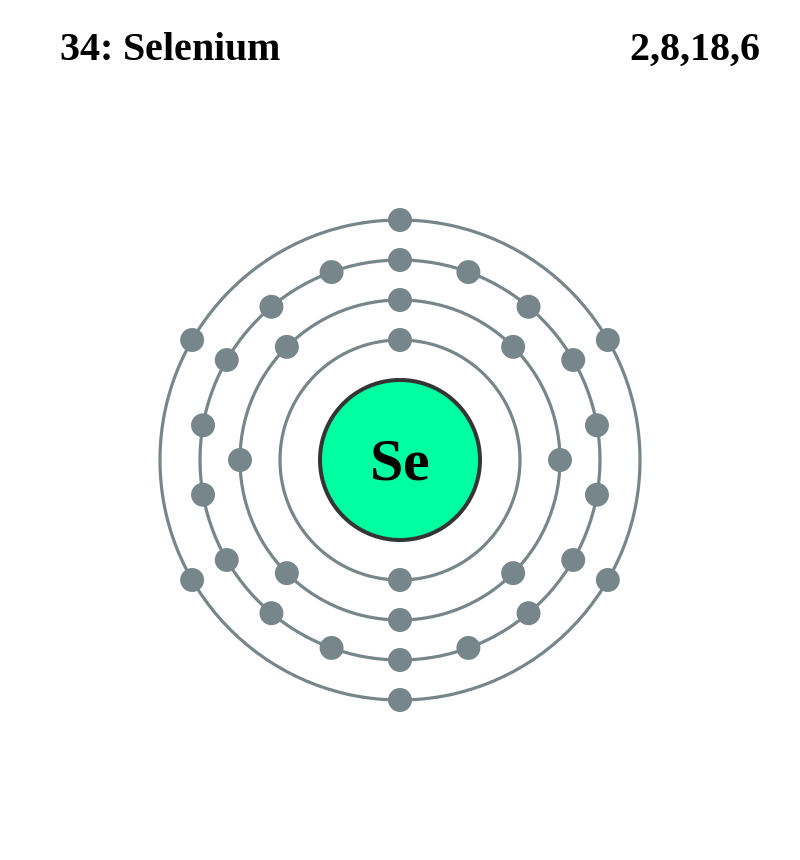

Basic Information about the element
Basic Information about the element
Name: Selenium
Symbol: Se
Atomic Number: 34

1s2 2s2 2p6 3s2 3p6 3d10 4s2 4p4
The chemical element selenium is classed as a Non-metal.
It was discovered in 1817 by Jons Berzelius.
| Number of Protons/Electrons: | 34 |
| Number of Neutrons: | 45 |
| Atomic Mass: | 78.96 amu |
| Melting Point: | 217.0 °C |
| Boiling Point: | 684.9 °C |
| Classification: | Non-metal |
| Uses: | Selenium is used to develop photoelectric cells and TV cameras. |